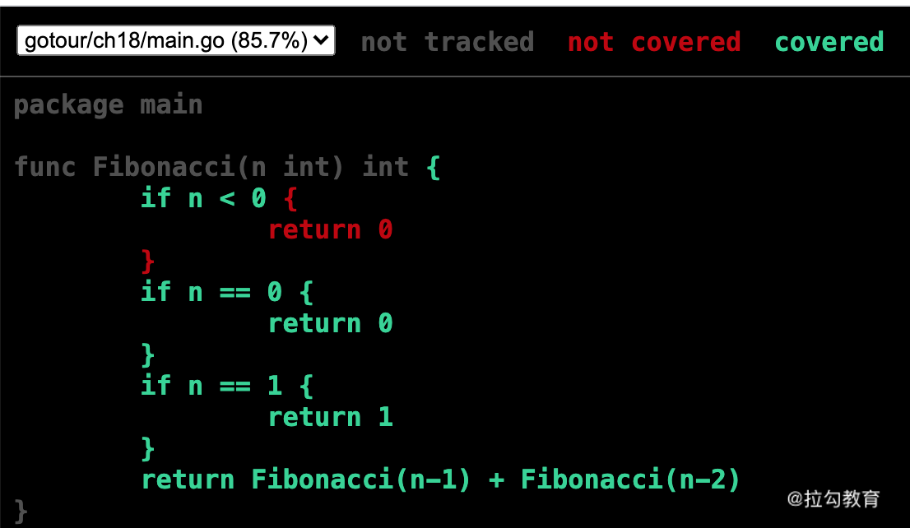

- 00 开篇词 Go 为开发者的需求设计，带你实现高效工作.md.html
- 01 基础入门：编写你的第一个 Go 语言程序.md.html
- 02 数据类型：你必须掌握的数据类型有哪些？.md.html
- 03 控制结构：if、for、switch 逻辑语句的那些事儿.md.html
- 04 集合类型：如何正确使用 array、slice 和 map？.md.html
- 05 函数和方法：Go 语言中的函数和方法到底有什么不同？.md.html
- 06 struct 和 interface：结构体与接口都实现了哪些功能？.md.html
- 07 错误处理：如何通过 error、deferred、panic 等处理错误？.md.html
- 08 并发基础：Goroutines 和 Channels 的声明与使用.md.html
- 09 同步原语：sync 包让你对并发控制得心应手.md.html
- 10 Context：你必须掌握的多线程并发控制神器.md.html
- 11 并发模式：Go 语言中即学即用的高效并发模式.md.html
- 12 指针详解：在什么情况下应该使用指针？.md.html
- 13 参数传递：值、引用及指针之间的区别？.md.html
- 14 内存分配：new 还是 make？什么情况下该用谁？.md.html
- 15 运行时反射：字符串和结构体之间如何转换？.md.html
- 16 非类型安全：让你既爱又恨的 unsafe.md.html
- 17 SliceHeader：slice 如何高效处理数据？.md.html
- 18 质量保证：Go 语言如何通过测试保证质量？.md.html
- 19 性能优化：Go 语言如何进行代码检查和优化？.md.html
- 20 协作开发：模块化管理为什么能够提升研发效能？.md.html
- 21 网络编程：Go 语言如何玩转 RESTful API 服务？.md.html
- 22 网络编程：Go 语言如何通过 RPC 实现跨平台服务？.md.html
- 23 结束语 你的 Go 语言成长之路.md.html
- 捐赠
18 质量保证：Go 语言如何通过测试保证质量？
从这节课开始，我会带你学习本专栏的第四模块：工程管理。现在项目的开发都不是一个人可以完成的，需要多人进行协作，那么在多人协作中如何保证代码的质量，你写的代码如何被其他人使用，如何优化代码的性能等， 就是第四模块的内容。
这一讲首先来学习 Go 语言的单元测试和基准测试。
单元测试
在开发完一个功能后，你可能会直接把代码合并到代码库，用于上线或供其他人使用。但这样是不对的，因为你还没有对所写的代码进行测试。没有经过测试的代码逻辑可能会存在问题：如果强行合并到代码库，可能影响其他人的开发；如果强行上线，可能导致线上 Bug、影响用户使用。
什么是单元测试
顾名思义，单元测试强调的是对单元进行测试。在开发中，一个单元可以是一个函数、一个模块等。一般情况下，你要测试的单元应该是一个完整的最小单元，比如 Go 语言的函数。这样的话，当每个最小单元都被验证通过，那么整个模块、甚至整个程序就都可以被验证通过。
单元测试由开发者自己编写，也就是谁改动了代码，谁就要编写相应的单元测试代码以验证本次改动的正确性。
Go 语言的单元测试
虽然每种编程语言里单元测试的概念是一样的，但它们对单元测试的设计不一样。Go 语言也有自己的单元测试规范，下面我会通过一个完整的示例为你讲解，这个例子就是经典的斐波那契数列。
斐波那契数列是一个经典的黄金分隔数列：它的第 0 项是 0；第 1 项是 1；从第 2 项开始，每一项都等于前两项之和。所以它的数列是：0、1、1、2、3、5、8、13、21……
说明：为了便于总结后面的函数方程式，我这里特意写的从第 0 项开始，其实现实中没有第 0 项。
根据以上规律，可以总结出它的函数方程式。
- F(0)=0
- F(1)=1
- F(n)=F(n - 1)+F(n - 2)
有了函数方程式，再编写一个 Go 语言函数来计算斐波那契数列就比较简单了，代码如下：
ch18/main.go
func Fibonacci(n int) int {
if n < 0 {
return 0
}
if n == 0 {
return 0
}
if n == 1 {
return 1
}
return Fibonacci(n-1) + Fibonacci(n-2)
}
也就是通过递归的方式实现了斐波那契数列的计算。
Fibonacci 函数已经编写好了，可以供其他开发者使用，不过在使用之前，需要先对它进行单元测试。你需要新建一个 go 文件用于存放单元测试代码。刚刚编写的 Fibonacci 函数在*ch18/main.go*文件中，那么对 Fibonacci 函数进行单元测试的代码需要放在*ch18/main_test.go*中*，*测试代码如下：
ch18/main_test.go
func TestFibonacci(t *testing.T) {
//预先定义的一组斐波那契数列作为测试用例
fsMap := map[int]int{}
fsMap[0] = 0
fsMap[1] = 1
fsMap[2] = 1
fsMap[3] = 2
fsMap[4] = 3
fsMap[5] = 5
fsMap[6] = 8
fsMap[7] = 13
fsMap[8] = 21
fsMap[9] = 34
for k, v := range fsMap {
fib := Fibonacci(k)
if v == fib {
t.Logf("结果正确:n为%d,值为%d", k, fib)
} else {
t.Errorf("结果错误：期望%d,但是计算的值是%d", v, fib)
}
}
}
在这个单元测试中，我通过 map 预定义了一组测试用例，然后通过 Fibonacci 函数计算结果。同预定义的结果进行比较，如果相等，则说明 Fibonacci 函数计算正确，不相等则说明计算错误。
然后即可运行如下命令，进行单元测试：
➜ go test -v ./ch18
这行命令会运行 ch18 目录下的所有单元测试，因为我只写了一个单元测试，所以可以看到结果如下所示：
➜ go test -v ./ch18
=== RUN TestFibonacci
main_test.go:21: 结果正确:n为0,值为0
main_test.go:21: 结果正确:n为1,值为1
main_test.go:21: 结果正确:n为6,值为8
main_test.go:21: 结果正确:n为8,值为21
main_test.go:21: 结果正确:n为9,值为34
main_test.go:21: 结果正确:n为2,值为1
main_test.go:21: 结果正确:n为3,值为2
main_test.go:21: 结果正确:n为4,值为3
main_test.go:21: 结果正确:n为5,值为5
main_test.go:21: 结果正确:n为7,值为13
--- PASS: TestFibonacci (0.00s)
PASS
ok gotour/ch18 (cached)
在打印的测试结果中，你可以看到 PASS 标记，说明单元测试通过，而且还可以看到我在单元测试中写的日志。
这就是一个完整的 Go 语言单元测试用例，它是在 Go 语言提供的测试框架下完成的。Go 语言测试框架可以让我们很容易地进行单元测试，但是需要遵循五点规则。
- 含有单元测试代码的 go 文件必须以 _test.go 结尾，Go 语言测试工具只认符合这个规则的文件。
- 单元测试文件名 _test.go 前面的部分最好是被测试的函数所在的 go 文件的文件名，比如以上示例中单元测试文件叫 main_test.go，因为测试的 Fibonacci 函数在 main.go 文件里。
- 单元测试的函数名必须以 Test 开头，是可导出的、公开的函数。
- 测试函数的签名必须接收一个指向 testing.T 类型的指针，并且不能返回任何值。
- 函数名最好是 Test + 要测试的函数名，比如例子中是 TestFibonacci，表示测试的是 Fibonacci 这个函数。
遵循以上规则，你就可以很容易地编写单元测试了。单元测试的重点在于熟悉业务代码的逻辑、场景等，以便尽可能地全面测试，保障代码质量。
单元测试覆盖率
以上示例中的 Fibonacci 函数是否被全面地测试了呢？这就需要用单元测试覆盖率进行检测了。
Go 语言提供了非常方便的命令来查看单元测试覆盖率。还是以 Fibonacci 函数的单元测试为例，通过一行命令即可查看它的单元测试覆盖率。
➜ go test -v --coverprofile=ch18.cover ./ch18
这行命令包括 –coverprofile 这个 Flag，它可以得到一个单元测试覆盖率文件，运行这行命令还可以同时看到测试覆盖率。Fibonacci 函数的测试覆盖率如下：
PASS
coverage: 85.7% of statements
ok gotour/ch18 0.367s coverage: 85.7% of statements
可以看到，测试覆盖率为 85.7%。从这个数字来看，Fibonacci 函数应该没有被全面地测试，这时候就需要查看详细的单元测试覆盖率报告了。
运行如下命令，可以得到一个 HTML 格式的单元测试覆盖率报告：
➜ go tool cover -html=ch18.cover -o=ch18.html
命令运行后，会在当前目录下生成一个 ch18.html 文件，使用浏览器打开它，可以看到图中的内容：

单元测试覆盖率报告
红色标记的部分是没有测试到的，绿色标记的部分是已经测试到的。这就是单元测试覆盖率报告的好处，通过它你可以很容易地检测自己写的单元测试是否完全覆盖。
根据报告，我再修改一下单元测试，把没有覆盖的代码逻辑覆盖到，代码如下：
fsMap[-1] = 0
也就是说，由于图中 n 的部分显示为红色，表示没有测试到，所以我们需要再添加一组测试用例，用于测试 n 的情况。现在再运行这个单元测试，查看它的单元测试覆盖率，就会发现已经是 100% 了。
基准测试
除了需要保证我们编写的代码的逻辑正确外，有时候还有性能要求。那么如何衡量代码的性能呢？这就需要基准测试了。
什么是基准测试
基准测试（Benchmark）是一项用于测量和评估软件性能指标的方法，主要用于评估你写的代码的性能。
Go 语言的基准测试
Go 语言的基准测试和单元测试规则基本一样，只是测试函数的命名规则不一样。现在还以 Fibonacci 函数为例，演示 Go 语言基准测试的使用。
Fibonacci 函数的基准测试代码如下：
ch18/main_test.go
func BenchmarkFibonacci(b *testing.B){
for i:=0;i<b.N;i++{
Fibonacci(10)
}
}
这是一个非常简单的 Go 语言基准测试示例，它和单元测试的不同点如下：
- 基准测试函数必须以 Benchmark 开头，必须是可导出的；
- 函数的签名必须接收一个指向 testing.B 类型的指针，并且不能返回任何值；
- 最后的 for 循环很重要，被测试的代码要放到循环里；
- b.N 是基准测试框架提供的，表示循环的次数，因为需要反复调用测试的代码，才可以评估性能。
写好了基准测试，就可以通过如下命令来测试 Fibonacci 函数的性能：
➜ go test -bench=. ./ch18
goos: darwin
goarch: amd64
pkg: gotour/ch18
BenchmarkFibonacci-8 3461616 343 ns/op
PASS
ok gotour/ch18 2.230s
运行基准测试也要使用 go test 命令，不过要加上 -bench 这个 Flag，它接受一个表达式作为参数，以匹配基准测试的函数，”.“表示运行所有基准测试。
下面着重解释输出的结果。看到函数后面的 -8 了吗？这个表示运行基准测试时对应的 GOMAXPROCS 的值。接着的 3461616 表示运行 for 循环的次数，也就是调用被测试代码的次数，最后的 343 ns/op 表示每次需要花费 343 纳秒。
基准测试的时间默认是 1 秒，也就是 1 秒调用 3461616 次、每次调用花费 343 纳秒。如果想让测试运行的时间更长，可以通过 -benchtime 指定，比如 3 秒，代码如下所示：
go test -bench=. -benchtime=3s ./ch18
计时方法
进行基准测试之前会做一些准备，比如构建测试数据等，这些准备也需要消耗时间，所以需要把这部分时间排除在外。这就需要通过 ResetTimer 方法重置计时器，示例代码如下：
func BenchmarkFibonacci(b *testing.B) {
n := 10
b.ResetTimer() //重置计时器
for i := 0; i < b.N; i++ {
Fibonacci(n)
}
}
这样可以避免因为准备数据耗时造成的干扰。
除了 ResetTimer 方法外，还有 StartTimer 和 StopTimer 方法，帮你灵活地控制什么时候开始计时、什么时候停止计时。
内存统计
在基准测试时，还可以统计每次操作分配内存的次数，以及每次操作分配的字节数，这两个指标可以作为优化代码的参考。要开启内存统计也比较简单，代码如下，即通过 ReportAllocs() 方法：
func BenchmarkFibonacci(b *testing.B) {
n := 10
b.ReportAllocs() //开启内存统计
b.ResetTimer() //重置计时器
for i := 0; i < b.N; i++ {
Fibonacci(n)
}
}
现在再运行这个基准测试，就可以看到如下结果：
➜ go test -bench=. ./ch18
goos: darwin
goarch: amd64
pkg: gotour/ch18
BenchmarkFibonacci-8 2486265 486 ns/op 0 B/op 0 allocs/op
PASS
ok gotour/ch18 2.533s
可以看到相比原来的基准测试多了两个指标，分别是 0 B/op 和 0 allocs/op。前者表示每次操作分配了多少字节的内存，后者表示每次操作分配内存的次数。这两个指标可以作为代码优化的参考，尽可能地越小越好。
小提示：以上两个指标是否越小越好？这是不一定的，因为有时候代码实现需要空间换时间，所以要根据自己的具体业务而定，做到在满足业务的情况下越小越好。
并发基准测试
除了普通的基准测试外，Go 语言还支持并发基准测试，你可以测试在多个 goroutine 并发下代码的性能。还是以 Fibonacci 为例，它的并发基准测试代码如下：
func BenchmarkFibonacciRunParallel(b *testing.B) {
n := 10
b.RunParallel(func(pb *testing.PB) {
for pb.Next() {
Fibonacci(n)
}
})
}
可以看到，Go 语言通过 RunParallel 方法运行并发基准测试。RunParallel 方法会创建多个 goroutine，并将 b.N 分配给这些 goroutine 执行。
基准测试实战
相信你已经理解了 Go 语言的基准测试，也学会了如何使用，现在我以一个实战帮你复习。
还是以 Fibonacci 函数为例，通过前面小节的基准测试，会发现它并没有分配新的内存，也就是说 Fibonacci 函数慢并不是因为内存，排除掉这个原因，就可以归结为所写的算法问题了。
在递归运算中，一定会有重复计算，这是影响递归的主要因素。解决重复计算可以使用缓存，把已经计算好的结果保存起来，就可以重复使用了。
基于这个思路，我将 Fibonacci 函数的代码进行如下修改：
//缓存已经计算的结果
var cache = map[int]int{}
func Fibonacci(n int) int {
if v, ok := cache[n]; ok {
return v
}
result := 0
switch {
case n < 0:
result = 0
case n == 0:
result = 0
case n == 1:
result = 1
default:
result = Fibonacci(n-1) + Fibonacci(n-2)
}
cache[n] = result
return result
}
这组代码的核心在于采用一个 map 将已经计算好的结果缓存、便于重新使用。改造后，我再来运行基准测试，看看刚刚优化的效果，如下所示：
BenchmarkFibonacci-8 97823403 11.7 ns/op
可以看到，结果为 11.7 纳秒，相比优化前的 343 纳秒，性能足足提高了 28 倍。
总结
单元测试是保证代码质量的好方法，但单元测试也不是万能的，使用它可以降低 Bug 率，但也不要完全依赖。除了单元测试外，还可以辅以 Code Review、人工测试等手段更好地保证代码质量。
在这节课的最后给你留个练习题：在运行 go test 命令时，使用 -benchmem 这个 Flag 进行内存统计。
下一讲我将介绍“性能优化：Go 语言如何进行代码检查和优化？”记得来听课！
© 2019 - 2023 Liangliang Lee. Powered by gin and hexo-theme-book.